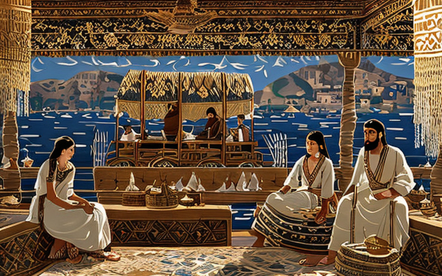
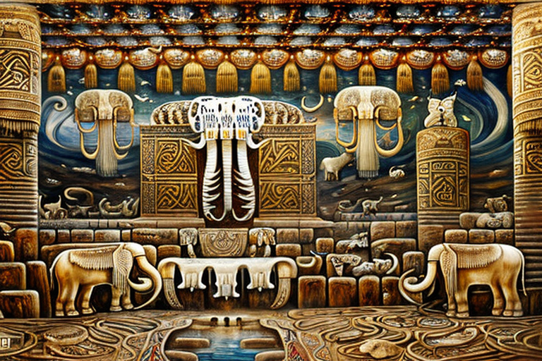
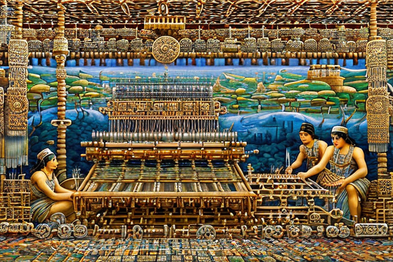
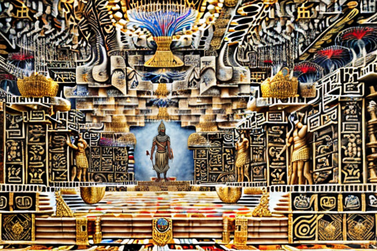
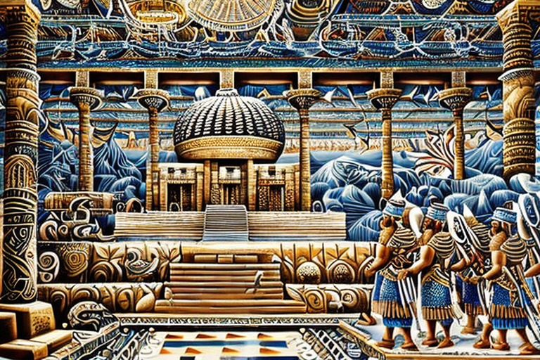

Ο Ουρουρούμ στο αρχαίο χωριό της Ζγκαρόθ
Αρχική Σελίδα
Πίνακας Περιεχομένων
H αναζήτηση του μαλλιαρού μαμούθ

Λαοί της αρχαίας γης των Σουμερίων! Ένα μεγάλο δίλημμα βρήκε τα αδέρφια μας στο μακρινό χωριό της Ζγκαρόθ. Οι άνθρωποι εκεί έχουν απόλυτη ανάγκη από ένα πανί για τα ναυτικά τους σκάφη, ωστόσο κανένα ζώο δεν είναι τόσο ογκώδες ώστε να παρέχει το απαιτούμενο μέγεθος δέρματος. Δέρματα τίγρεων, ελεφάντων και γαϊδουριών έχουν δοκιμαστεί όλα, αλλά δυστυχώς, το μέγεθός τους είναι πολύ μικρό.
Καθώς φτάνει στην Ζγκαρόθ, τον Ουρουρούμ υποδέχεται μια ομάδα ντόπιων που εξηγούν την κατάσταση σε σιωπηλούς τόνους. Τον οδηγούν στις αποβάθρες, όπου είναι αγκυροβολημένος ένας στόλος πλοίων, αναμένοντας να ανυψωθεί ένα πανί. Ο Ουρουρούμ ρίχνει μια ματιά στα πλοία και γνέφει σκεφτικά.
«Πες μου», λέει, «ποιο είναι το μεγαλύτερο ζώο σε αυτά τα μέρη;».
Οι ντόπιοι ξύνουν τα κεφάλια τους και μουρμουρίζουν μεταξύ τους. Επιτέλους, μια γενναία ψυχή μιλάει.
“Το γιγάντιο μαλλιαρό μαμούθ, κύριε. Αλλά έχουν εξαφανιστεί από καιρό.”
Τα μάτια του Ουρουρούμ φωτίσθηκαν. “Ανοησίες! Πρέπει να έχει μείνει κάποιο ίχνος από αυτά τα πλάσματα. Θα ψάξω τη γη μέχρι να βρω αυτό που ψάχνω.”
Και έτσι, ο Ουρουρούμ ξεκινά την αναζήτησή του, συνοδευόμενος από μια μικρή ομάδα πιστών ακολούθων. Ψάχνουν ψηλά και χαμηλά, μέσα από πυκνά δάση και ύπουλα βουνά, ώσπου τελικά, συναντούν μια σπηλιά χωμένη βαθιά στην καρδιά της ερημιάς.
Μέσα στη σπηλιά, ανεκάλυψαν τα υπολλείματα ενός τεράστιου μαμούθ, με τα ογκώδη οστά του να υψώνονται απο πάνω του σαν καθεδρικός ναός. Ο Ουρουρούμ εξέτασε τα οστά προσεκτικά, λαμβάνοντας ακριβείς μετρήσεις, σημειώνοντας κάθε λεπτομέρεια με την προσοχή ενός επιδέξιου τεχνίτη.
Από τα κόκαλα στο ύφασμα

Καθώς άγγιξε με τα χέρια του τα οστά του μαμούθ, ο Ουρουρούμ ένιωσε μια ξαφνική αίσθηση απόγνωσης. Διότι, αν και το πλάσμα ήταν κάποτε ισχυρό και δυνατό, το δέρμα του είχε προ πολλού διαλυθεί σε μαλλιά, δεν είχε μείνει τίποτα άλλο παρά κόκαλα και σήψη.
Με βαριά καρδιά, ο Ουρουρούμ συνειδητοποίησε ότι τα δέρματα ζώων ήταν μια παρωχημένη τεχνολογία για πανί πλοίων που τόσο χρειάζονταν οι κάτοικοι της Ζγκαρόθ. Είχε έρθει η ώρα να αναδυθεί μια νέα εποχή καινοτομίας και προόδου.
Τελικά ο Ουρουρούμ επέστρεψε στην Ζγκαρόθ με ένα τολμηρό σχέδιο. Θα έχτιζε ένα εργοστάσιο όπου οι επιδέξιοι υφαντές μπορούσαν να φτιάχνουν πανιά από φυτικές ίνες, αντί να βασίζονται σε δέρματα θηρίων, που κείτονται νεκρά εδώ και καιρό.
Ήταν ένα μεγάλο εγχείρημα, αλλά ο Ουρουρούμ ήταν απτόητος. Συσπείρωσε τους ανθρώπους της Ζγκαρόθ για τον σκοπό του και μαζί μόχθησαν μέρα και νύχτα για να χτίσουν το υφαντουργικό εργοστάσιο, υφαίνοντας τα όνειρά τους σε πραγματικότητα.
Και στο τέλος, οι κάτοικοι της Ζγκαρόθ είχαν ένα πανί που ήταν δυνατότερο και πιο ανθεκτικό από κάθε δέρμα ζώου. Έβαλαν πανιά στα πλοία τους, τροφοδοτούμενοι από τον άνεμο και την εφευρετικότητα των κατοίκων της Ζγκαρόθ, και ήξεραν ότι το μέλλον τους ήταν λαμπρό και γεμάτο δυνατότητες.
O υφαντουργικός θρίαμβος του Ουρούρουμ

Καθώς το εργοστάσιο του Ουρουρούμ βούιζε με τον ήχο αργαλειών και περιστρεφόμενων τροχών, οι κάτοικοι της Ζγκαρόθ θαύμασαν το ύφασμα που παρήχθη από τα εργαλεία του. Αντί για τα δέρματα ζώων που χρησιμοποιούσαν κάποτε, οι υφάντριες χρησιμοποιούσαν ένα νέο υλικό, το κανναβούρι.
Ο Ουρουρούμ είχε ανακαλύψει ότι οι ίνες του φυτού κάνναβης μπορούσαν να υφανθούν σε ένα ισχυρό και ανθεκτικό ύφασμα, ανώτερο από οτιδήποτε μπορούσε να προσφέρει το δέρμα των ζώων. Τα νήματα κάνναβης ήταν ελαφριά, αλλά απίστευτα δυνατά, καθιστώντας τα ιδανικά για χρήση ως πανί.
Οι κάτοικοι της Ζγκαρόθ έμειναν άναυδοι. Το ύφασμα κάνναβης ήταν εύκολο να παραχθεί σε μεγάλες ποσότητες και τα ρούχα που προέκυπταν ήταν εξαιρετικής ποιότητας. Καθώς η είδηση για την καινοτομία του Ουρουρούμ εξαπλώθηκε σε όλη τη Σουμερία και τη Βαβυλώνα, η ζήτηση για το ύφασμα κάνναβης αυξήθηκε στα ύψη.
Το υφαντουργείο του Ουρουρούμ έγινε μια ακμάζουσα επιχείρηση, με εμπόρους από όλο τον αρχαίο κόσμο να καταφθάνουν στην Ζγκαρόθ για να αγοράσουν τα προϊόντα του. Το πανί κάνναβης έγινε γνωστό ως το καλύτερο σε όλη τη χώρα και το όνομα του Ουρουρούμ έγινε συνώνυμο της καινοτομίας και της προόδου.
Καθώς καθόταν στο εργαστήριό του, περιτριγυρισμένος από τη βουή των περιστρεφόμενων τροχών και τον κρότο των αργαλειών, ο Ουρουρούμ ήξερε ότι είχε πετύχει κάτι πραγματικά σπουδαίο. Γιατί όχι μόνο είχε δημιουργήσει μια νέα τεχνολογία, αλλά είχε επίσης ανοίξει την πόρτα σε μια νέα εποχή επιστημονικών ανακαλύψεων και προόδου.
Λαδώνοντας τους τροχούς

Ο Ουρουρούμ σίγουρα ήξερε πώς να κατακτήσει την κορφή! Με το εργοστάσιο του να παράγει πανιά σαν μανιασμένο, τα κέρδη κυλούσαν στις τσέπες του σαν τα νερά του Ευφράτη την εποχή των πλημμύρων .
Ο Ουρουρούμ όλα αυτά γλυκά μετρητά, τα χρησιμοποίησε για να λαδώσει τους τροχούς της πολιτικής! Ήξερε ότι για να κάνει πραγματικά τη διαφορά, χρειαζόταν να έχει κάποια επιρροή στις εξουσίες.
Έτσι, έπιασε κολλητιλίκια με τον δήμαρχο της Ζγκαρόθ, και πριν προλάβει κανείς να ψελλίσει ρούχα κάνναβης, έπεισε τον μάγκα να απαγορεύσει το δέρμα ζώων ως υλικό ένδυσης! Από εδώ και πέρα, τα δέρατα θεωρούνται παρωχημένα, και καλύτερα οι πάντες να φοράνε ενδύματα φτιαγμένα από το μαρούλι του διαβόλου.
Οι κάτοικοι της Ζγκαρόθ αγκάλιασαν με ανοιχτές αγκάλες τα νέα τους ρούχα από κάνναβη και σύντομα προκαλούσαν την ζήλεια όλων των γειτονικών χωριών.
Η διαμαρτυρία των γδαρτών ζώων

Ο Ουρουρούμ, ο μεγάλος μεγιστάνας των υφασμάτων, μετά πολλών συνομιλιών έπεισε τον δήμαρχο της Ζγκαρόθ να απαγορεύσει το δέρμα ζώων ως ύφασμα ένδυσης. Αλλά δεν ήταν όλοι χαρούμενοι για αυτην την έκβαση.
Υπήρχαν οι εκδορείς ζώων, αυτοί οι τύποι που έβγαζαν κέρδος γδέρνοντας ζώα και πουλώντας τα δέρματά τους, οι οποίοι δεν ήταν πολύ ενθουσιασμένοι με όλο αυτό το θέμα των ρούχων κάνναβης. Άρχισαν να διαδηλώνουν στους δρόμους κατά εκατοντάδες, διαμαρτυρόμενοι και προκαλώντας σάλο.
Αυτοί οι τύποι όμως είχαν τόσο συνηθίσει να καταπιάνονται με δέρματα ζώων όλη μέρα, που είχαν αναπτύξει μια σοβαρή περίπτωση τσιμπουριών. Τα μικρά ζωύφια κρύβονταν στα δέρματα των ζώων, πηδώντας από τη μύτη στα πόδια τους, προκαλώντας κάθε είδους δυσκολίες στη διαμαρτυρία.
Ο Ουρουρούμ έβλεπε έναν σωρό τύπους να ξύνονται σαν να είχαν μια εκνευριστική περίπτωση ψύλλων. Δεν μπορούσαν να σταματήσουν να αναπηδούν και να ξύνονται, και τους έκανε να φαίνονται σαν ένα μάτσο ανόητοι.
Εν τω μεταξύ, ο Ουρουρούμ διασκέδαζε με το θέαμα. Ήξερε ότι τα νέα ρούχα κάνναβης ήταν η τεχνολογία του μέλλοντος και δεν επρόκειτο να αφήσει ένα μάτσο ψυλλιασμένων εκδορέων ζώων να τον εμποδίσουν στον δρόμο προς την επιτυχία.
Έτσι, απλώς κάθισε, σήκωσε τα πόδια του και κοίταξε τους εκδορείς των ζώων να κοροϊδεύουν τους εαυτούς τους, ξύνοντας σπασμωδικά τα μέλη τους στους δρόμους της Ζγκαρόθ.